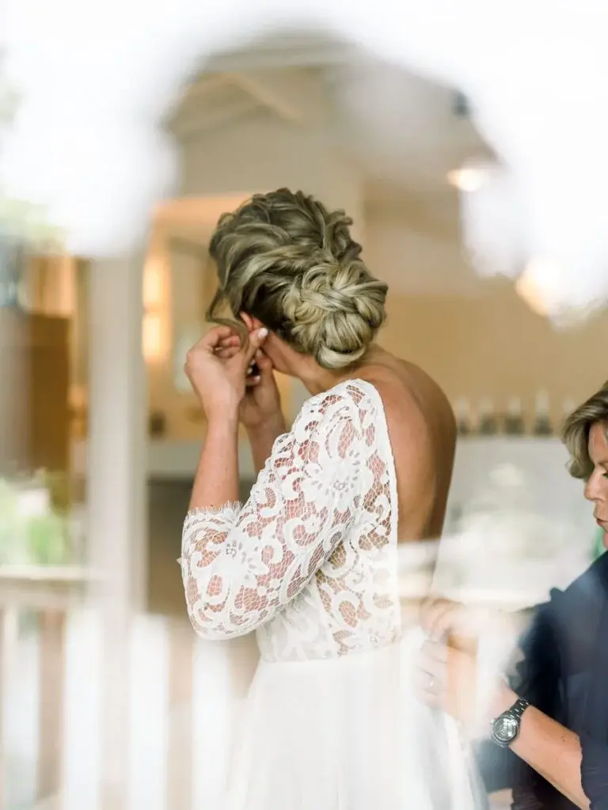
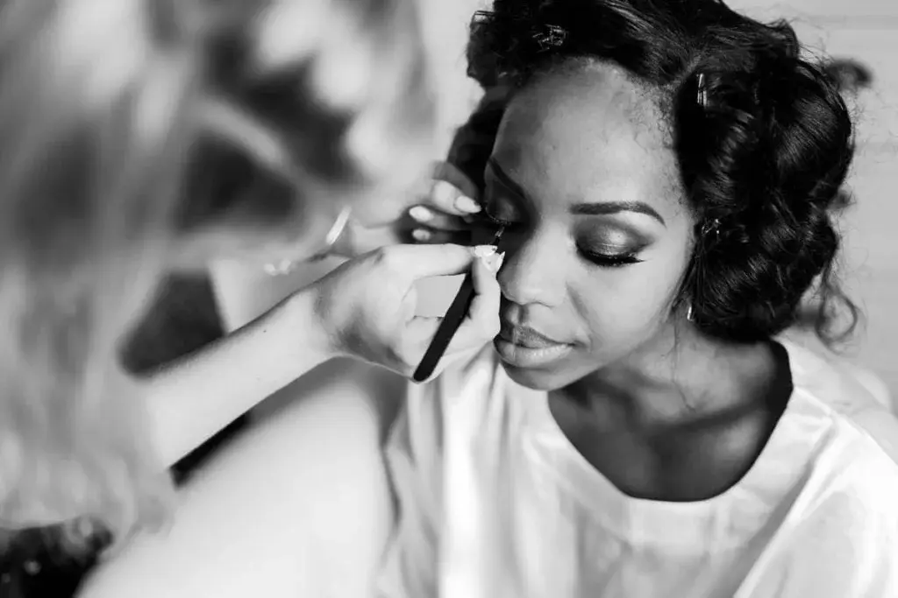
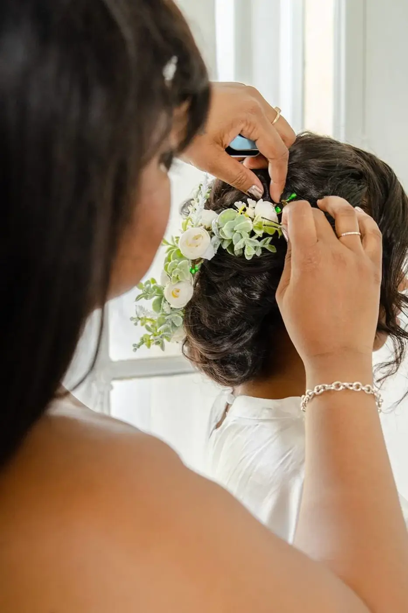
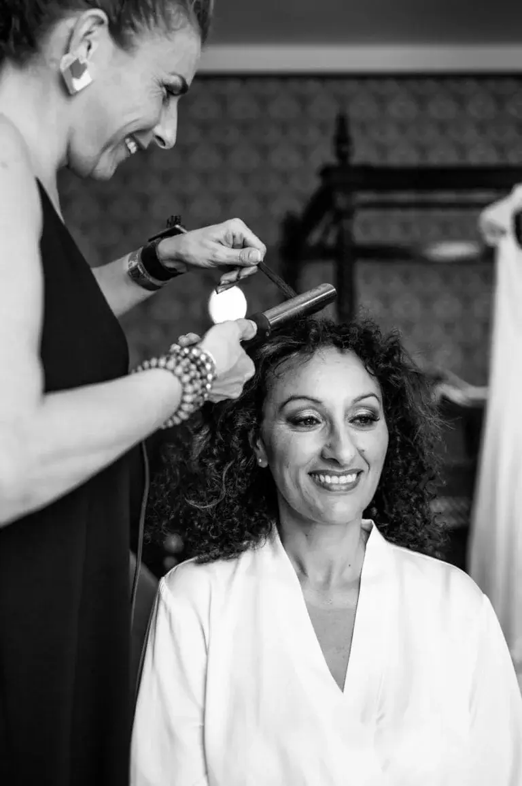
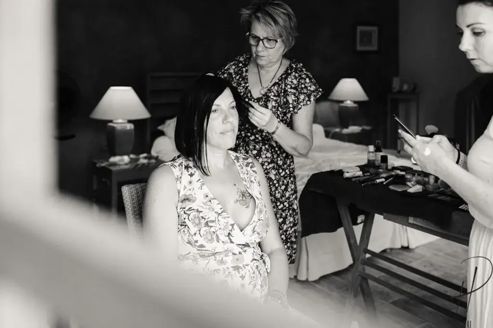
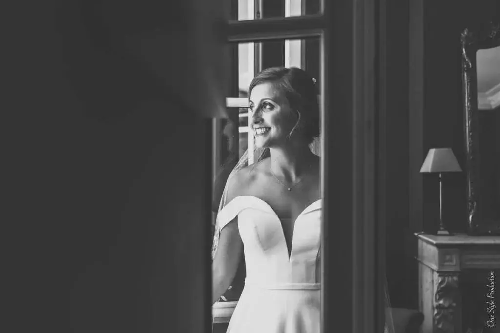
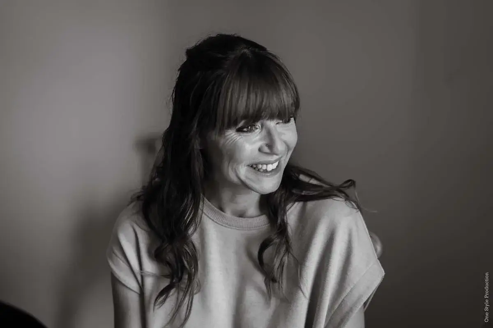
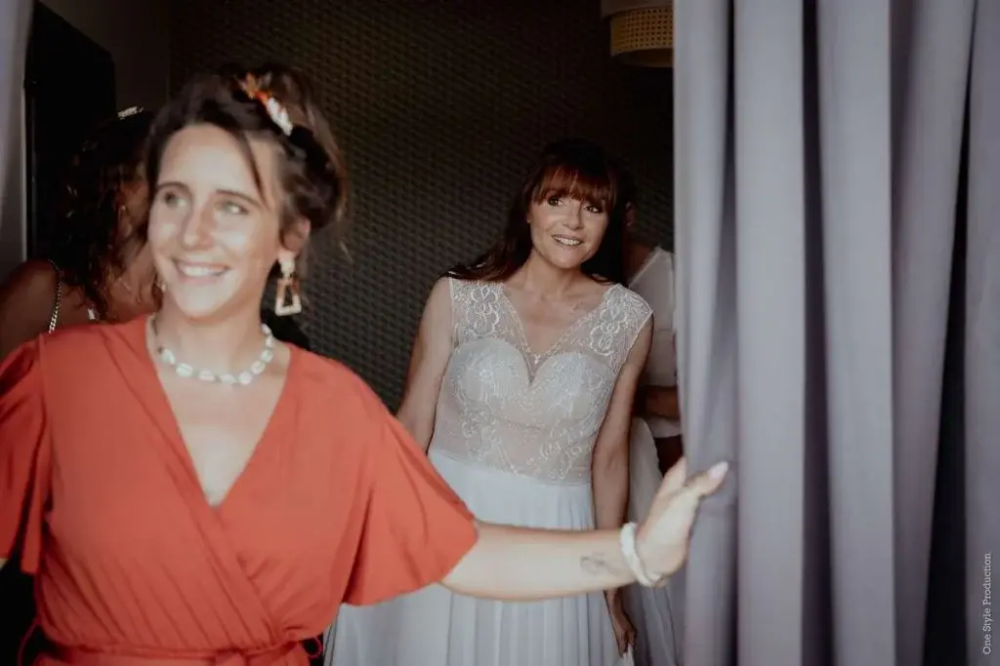

Wedding hair and make-up
It's happened: you've said yes to the love of your life and you're about to get married! So you want to look radiant on this very special day? For inspiration, here are a few wedding beauty ideas in Bordeaux.

There's no doubt you're already the most beautiful in your beloved's eyes, but you surely want to mark the occasion and step out of the ordinary with a breathtaking wedding look. That's only natural: for such a unique day, out come the brushes for a transformation worthy of a film set! In Bordeaux, there are many professional hairdressers and make-up artists who will delight you and meet all your wishes.
First of all, remember that it's your day, and for your beauty look, as for your dress, your decor and everything surrounding your wedding day, you're the one who chooses! You're the queen of the evening, so you can be daring and add a touch of fantasy to your beauty routine. But if you want everything to be coherent, come back to your theme. A boho wedding in the woods around Bordeaux? Why not choose natural, nude make-up in warm tones and a loose bun scattered with little flowers! A romantic wedding in a Bordeaux château? Dare to be sophisticated with a princess look, bolder make-up and an intricate bun! Or a beach wedding on the Arcachon Bay? Let your hair float in the breeze with soft waves and a warm, glowing complexion! There are countless possible combinations, so treat yourself and explore new things!

At the weddings I've organised, I've often advised brides on this aspect. As a wedding planner based in Bordeaux, I have a good knowledge of the latest wedding beauty trends and of qualified professionals suited to your skin and hair type. I work with talented beauty professionals and can point you towards the one who will best match your wishes and style.
So if you need help choosing the look that suits you best, or finding quality wedding hairdressers and make-up artists in Bordeaux, don't hesitate to call on me! I'm a wedding planner, so if you also need a hand with your wedding preparations and coordination on the big day, I can advise you on those too!






Lovely Day Event offers several services
Wedding planning
I step in at every stage of your preparations and guide you through your choices, bringing ideas and suggestions so that your wedding looks like no one but you.
On-the-day coordination
I will be the conductor of your day, managing the suppliers, the set-up of your decor and the smooth running of this beautiful day.
Wedding design
Creative and passionate, I am a certified Wedding Designer and I create a scenographic atmosphere that matches the theme of your wedding. Styling is included in Signature, or offered as an add-on to on-the-day coordination.